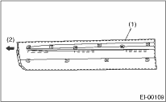
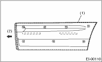

EXTERIOR/INTERIOR TRIM > Side Garnish
1. Affix the double-sided tape (Sumitomo 3M 5305 or the equivalent) after applying the primer (Sumitomo 3M K-500 or the equivalent) widely around the area where the double-sided tape is affixed.
NOTE:
Use the double-sided tape with 1 mm (0.04 in) thickness and 5 mm (0.2 in) width.


|
(1) |
Double-sided tape |
|
(2) |
Front side |
2. Heat the vehicle to 40 to 60°C (104 — 140°F), and the garnish 20 to 30°C (68 — 86°F) using a heat light.
3. Peel the backing paper off the double-sided tape and position the clip with the body hole. Be careful not to let air enter the adhesive surface. Manually push on the tape with approximately 69 — 98 N (7 — 10 kgf, 15 — 22 lbf) of force.
NOTE:
• To keep the adhesion, do not wash the vehicle within 24 hours from installation.
• Be careful not to move it up or down after application.